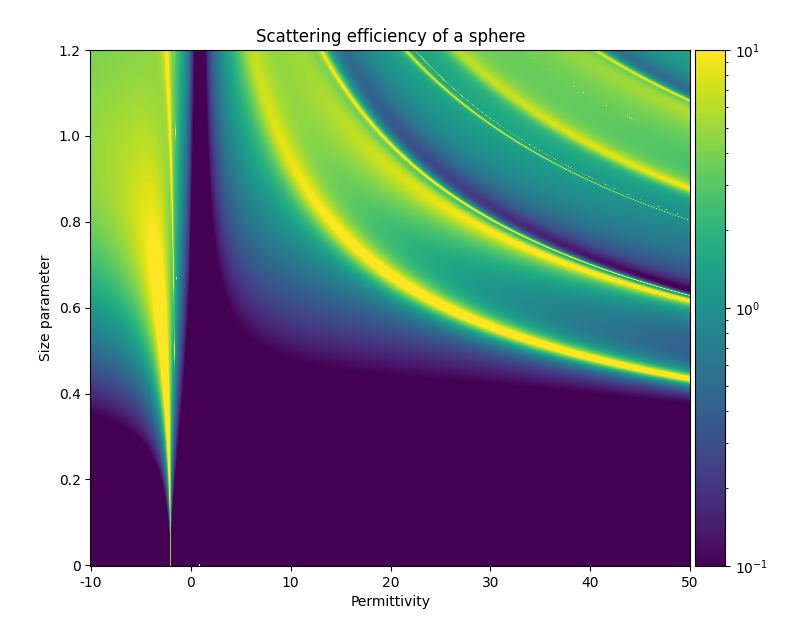

Examples¶
Creating Scatterers¶
1def run():
2 from PyMieSim.Scatterer import Sphere
3 from PyMieSim.Source import PlaneWave
4 from PyMieSim import Material
5
6 Source = PlaneWave(Wavelength = 450e-9,
7 Polarization = 0,
8 E0 = 1)
9
10 Scat = Sphere(Diameter = 800e-9,
11 Source = Source,
12 Index = 1.445)
13
14
15if __name__ == '__main__':
16 run()
1def run():
2 from PyMieSim.Scatterer import Sphere
3 from PyMieSim.Source import PlaneWave
4 from PyMieSim import Material
5
6 Source = PlaneWave(Wavelength = 450e-9,
7 Polarization = 0,
8 E0 = 1)
9
10 Scat = Sphere(Diameter = 300e-9,
11 Source = Source,
12 Material = Material('BK7'))
13
14
15 # Material can be 'FusedSilica'
16 # 'Aluminium'
17 # 'Silver'
18 # 'SodaLimeGlass'
19 # More information in Material section of documentation
20
21
22if __name__ == '__main__':
23 run()
1def run():
2 from PyMieSim.Scatterer import Sphere
3 from PyMieSim.Source import PlaneWave
4
5 Source = PlaneWave(Wavelength = 450e-9,
6 Polarization = 0,
7 E0 = 1)
8
9 Scat = Sphere(Diameter = 800e-9,
10 Source = Source,
11 Index = 1.4)
12
13 print(Scat.Properties)
14
15
16if __name__ == '__main__':
17 run()
18
19
20#___________________________OUTPUT___________________________________
21#
22# Object: Dictionary
23# Keys: Efficiencies, cross-sections, others
24# Structured data: Yes
25# Method: <Plot>
26# Shape: [7, 1]
27# ========================================
28# ----------------------------------------------------------------------
29# Efficiencies | Qsca | 4.029799032677242
30# ----------------------------------------------------------------------
31# | Qext | 4.029799032677242
32# ----------------------------------------------------------------------
33# | Qabs | 0.0
34# ----------------------------------------------------------------------
35# | Qback | 4.973830378796597
36# ----------------------------------------------------------------------
37# | Qratio | 1.2342626365395144
38# ----------------------------------------------------------------------
39# | Qpr | 0.7925897259835781
40# ----------------------------------------------------------------------
41# cross-sections | Csca | 2.025597925840332e-12 m² (2.03e+00 μm²)
42# ----------------------------------------------------------------------
43# | Cext | 2.025597925840332e-12 m² (2.03e+00 μm²)
44# ----------------------------------------------------------------------
45# | Cabs | 0 m²
46# ----------------------------------------------------------------------
47# | Cback | 2.5001198365166603e-12 m² (2.50e+00 μm²)
48# ----------------------------------------------------------------------
49# | Cratio | 6.204080690484652e-13 m² (6.20e+05 nm²)
50# ----------------------------------------------------------------------
51# | Cpr | 3.98399049673721e-13 m² (3.98e+05 nm²)
52# ----------------------------------------------------------------------
53# others | area | 5.026548245743668e-13 m² (5.03e+05 nm²)
54# ----------------------------------------------------------------------
55# | index | 1.4
56# ----------------------------------------------------------------------
Computing fields¶
1def run():
2 from PyMieSim.Scatterer import Sphere
3 from PyMieSim.Source import PlaneWave
4
5
6 Source = PlaneWave(Wavelength = 450e-9,
7 Polarization = 0,
8 E0 = 1)
9
10 Scat = Sphere(Diameter = 300e-9,
11 Source = Source,
12 Index = 1.4)
13
14
15 S1S2 = Scat.S1S2(Num=100)
16
17 S1S2.Plot()
18
19
20if __name__ == '__main__':
21 run()

1def run():
2 from PyMieSim.Scatterer import Sphere
3 from PyMieSim.Source import PlaneWave
4
5 Source = PlaneWave(Wavelength = 450e-9,
6 Polarization = 0,
7 E0 = 1)
8
9 Scat = Sphere(Diameter = 300e-9,
10 Source = Source,
11 Index = 1.4)
12
13 Stokes = Scat.Stokes(Num=100)
14
15 Stokes.Plot()
16
17
18if __name__ == '__main__':
19 run()

1def run():
2 from PyMieSim.Scatterer import Sphere
3 from PyMieSim.Source import PlaneWave
4
5
6 Source = PlaneWave(Wavelength = 450e-9,
7 Polarization = 0,
8 E0 = 1)
9
10 Scat = Sphere(Diameter = 300e-9,
11 Source = Source,
12 Index = 1.4)
13
14
15 Fields = Scat.FarField(Num=100)
16
17 Fields.Plot()
18
19
20if __name__ == '__main__':
21 run()

1def run():
2 from PyMieSim.Scatterer import Sphere
3 from PyMieSim.Source import PlaneWave
4
5 Source = PlaneWave(Wavelength = 450e-9,
6 Polarization = 0,
7 E0 = 1)
8
9 Scat = Sphere(Diameter = 800e-9,
10 Source = Source,
11 Index = 1.4)
12
13 SPF = Scat.SPF(Num=100)
14
15 SPF.Plot()
16
17
18if __name__ == '__main__':
19 run()

Creating Detectors¶
1def run():
2 from PyMieSim.Source import PlaneWave
3 from PyMieSim.Detector import Photodiode
4
5
6 Source = PlaneWave(Wavelength = 450e-9,
7 Polarization = 0,
8 E0 = 1)
9
10 Detector = Photodiode(NA = 0.8,
11 Sampling = 1001,
12 GammaOffset = 0,
13 PhiOffset = 0)
14
15
16 Detector.Plot()
17
18
19if __name__ == '__main__':
20 run()

1def run():
2 from PyMieSim.Source import PlaneWave
3 from PyMieSim.Detector import LPmode
4
5
6 Source = PlaneWave(Wavelength = 450e-9,
7 Polarization = 0,
8 E0 = 0)
9
10 Detector = LPmode(Mode = (1, 1),
11 Rotation = 0.,
12 Sampling = 201,
13 NA = 0.4,
14 GammaOffset = 0,
15 PhiOffset = 40,
16 CouplingMode = 'Centered')
17
18
19 Detector.Plot()
20
21
22if __name__ == '__main__':
23 run()

Computing coupling¶
1def run():
2 from PyMieSim.Source import PlaneWave
3 from PyMieSim.Detector import Photodiode
4 from PyMieSim.Scatterer import Sphere
5
6 Source = PlaneWave(Wavelength = 450e-9,
7 Polarization = 0,
8 E0 = 1)
9
10 Detector = Photodiode(Sampling = 201,
11 NA = 0.2,
12 GammaOffset = 0,
13 PhiOffset = 0,
14 CouplingMode = 'Centered')
15
16 Scat = Sphere(Diameter = 300e-9,
17 Source = Source,
18 Index = 1.4)
19
20 Coupling = Detector.Coupling(Scatterer = Scat)
21
22 print(Coupling) # 6.566085549292496e-18
23
24
25if __name__ == '__main__':
26 run()
Output: (6.57e+01 nWatt)
Experiment: properties¶
1def run():
2 import numpy as np
3 from PyMieSim.Scatterer import Sphere
4 from PyMieSim.Source import PlaneWave
5 from PyMieSim.Detector import Photodiode
6 from PyMieSim.Experiment import ScatSet, SourceSet, Setup, DetectorSet
7
8 scatKwargs = { 'Diameter' : np.linspace(100e-9, 10000e-9, 400),
9 'Index' : [1.4, 1.6],
10 'nMedium' : [1] }
11
12 sourceKwargs = { 'Wavelength' : [400e-9],
13 'Polarization' : [0]}
14
15 scatSet = ScatSet(Scatterer = Sphere, kwargs = scatKwargs )
16
17 sourceSet = SourceSet(Source = PlaneWave, kwargs = sourceKwargs )
18
19 Experiment = Setup(ScattererSet = scatSet,
20 SourceSet = sourceSet,
21 DetectorSet = None)
22
23 Data = Experiment.Get('Qsca')
24
25 Data.Plot(x='Diameter')
26
27
28if __name__ == '__main__':
29 run()

1def run():
2 import numpy as np
3 from PyMieSim import Material
4 from PyMieSim.Scatterer import Sphere
5 from PyMieSim.Source import PlaneWave
6 from PyMieSim.Detector import Photodiode
7 from PyMieSim.Experiment import ScatSet, SourceSet, Setup, DetectorSet
8
9 scatKwargs = { 'Diameter' : np.geomspace(6.36e-09, 10000e-9, 1500),
10 'Material' : [Material('Silver')],
11 'nMedium' : [1] }
12
13 sourceKwargs = { 'Wavelength' : [400e-9],
14 'Polarization' : [0]}
15
16 scatSet = ScatSet(Scatterer = Sphere, kwargs = scatKwargs )
17
18 sourceSet = SourceSet(Source = PlaneWave, kwargs = sourceKwargs )
19
20 Experiment = Setup(ScattererSet = scatSet,
21 SourceSet = sourceSet)
22
23 Data = Experiment.Get(Input=['Qsca', 'Qabs'])
24
25 Data.Plot(x='diameter', Scale='log', Groupby='type')
26
27
28
29if __name__ == '__main__':
30 run()

1def run():
2 import numpy as np
3 from PyMieSim.Scatterer import Sphere
4 from PyMieSim.Source import PlaneWave
5 from PyMieSim.Detector import Photodiode
6 from PyMieSim.Experiment import ScatSet, SourceSet, Setup, DetectorSet
7
8 scatKwargs = { 'Diameter' : 200e-9,
9 'Index' : [4],
10 'nMedium' : [1] }
11
12 sourceKwargs = { 'Wavelength' : np.linspace(400e-9, 1000e-9, 500),
13 'Polarization' : [0]}
14
15 scatSet = ScatSet(Scatterer = Sphere, kwargs = scatKwargs )
16
17 sourceSet = SourceSet(Source = PlaneWave, kwargs = sourceKwargs )
18
19 Experiment = Setup(ScattererSet = scatSet,
20 SourceSet = sourceSet,
21 DetectorSet = None)
22
23
24 Data = Experiment.Get(Input='Qsca')
25
26 Data.Plot(x='Wavelength')
27
28
29
30
31if __name__ == '__main__':
32 run()

Experiment: coupling¶
1def run():
2 import numpy as np
3 from PyMieSim import Material
4 from PyMieSim.Scatterer import Sphere
5 from PyMieSim.Source import PlaneWave
6 from PyMieSim.Detector import Photodiode
7 from PyMieSim.Experiment import ScatSet, SourceSet, Setup, DetectorSet
8
9 scatKwargs = { 'Diameter' : np.linspace(400e-9, 2000e-9, 200),
10 'Material' : Material('BK7'),
11 'nMedium' : [1] }
12
13 sourceKwargs = { 'Wavelength' : 1e-6,
14 'Polarization' : [0,30,60,90]}
15
16 Detector0 = Photodiode(NA = 0.2,
17 Sampling = 300,
18 GammaOffset = 70,
19 PhiOffset = 0,
20 CouplingMode = 'Centered')
21
22 detectKwargs = { 'Detector 0' : Detector0}
23
24 detecSet = DetectorSet(kwargs = detectKwargs)
25
26 scatSet = ScatSet(Scatterer = Sphere, kwargs = scatKwargs )
27
28 sourceSet = SourceSet(Source = PlaneWave, kwargs = sourceKwargs )
29
30 Experiment = Setup(ScattererSet = scatSet,
31 SourceSet = sourceSet,
32 DetectorSet = detecSet)
33
34 Data = Experiment.Get('Coupling')
35
36 Data.Plot(x='Diameter')
37
38
39if __name__ == '__main__':
40 run()

1def run():
2 import numpy as np
3 from PyMieSim import Material
4 from PyMieSim.Scatterer import Sphere
5 from PyMieSim.Source import PlaneWave
6 from PyMieSim.Detector import Photodiode
7 from PyMieSim.Experiment import ScatSet, SourceSet, Setup, DetectorSet
8
9
10 Detector0 = Photodiode(NA = 2.0,
11 Sampling = 300,
12 GammaOffset = 0,
13 PhiOffset = 0,
14 CouplingMode = 'Centered')
15
16 scatKwargs = { 'Diameter' : 200e-9,
17 'Material' : Material('BK7'),
18 'nMedium' : [1] }
19
20 sourceKwargs = { 'Wavelength' : np.linspace(400e-9, 1000e-9, 500),
21 'Polarization' : [0]}
22
23 detectKwargs = { 'Detector 0' : Detector0}
24
25 detecSet = DetectorSet(kwargs = detectKwargs)
26
27 scatSet = ScatSet(Scatterer = Sphere, kwargs = scatKwargs )
28
29 sourceSet = SourceSet(Source = PlaneWave, kwargs = sourceKwargs )
30
31 Experiment = Setup(ScattererSet = scatSet,
32 SourceSet = sourceSet,
33 DetectorSet = detecSet)
34
35 Data = Experiment.Get('Coupling')
36
37 print(Data)
38
39 Data.Plot(x='wavelength')
40
41
42if __name__ == '__main__':
43 run()

Experiment: optimization¶
1def run():
2 return
3 import numpy as np
4 from PyMieSim import Material
5 from PyMieSim.Scatterer import Sphere
6 from PyMieSim.Detector import Photodiode, LPmode
7 from PyMieSim.Source import PlaneWave
8 from PyMieSim.Experiment import ScatSet, SourceSet, Setup, DetectorSet
9
10 DiameterList = np.linspace(100e-9, 1000e-9, 200)
11
12 Detector0 = Photodiode(NA = 0.1,
13 Sampling = 300,
14 GammaOffset = 20,
15 PhiOffset = 0,
16 CouplingMode = 'Centered')
17
18 scatKwargs = { 'Diameter' : np.linspace(400e-9, 2000e-9, 200),
19 'Material' : Material('BK7'),
20 'nMedium' : [1] }
21
22 sourceKwargs = { 'Wavelength' : 1e-6,
23 'Polarization' : [0]}
24
25 Detector0 = Photodiode(NA = 2.0,
26 Sampling = 300,
27 GammaOffset = 0,
28 PhiOffset = 0,
29 CouplingMode = 'Centered')
30
31 detecSet = DetectorSet([Detector0])
32
33 scatSet = ScatSet(Scatterer = Sphere, kwargs = scatKwargs )
34
35 sourceSet = SourceSet(Source = PlaneWave, kwargs = sourceKwargs )
36
37 Experiment = Setup(ScattererSet = scatSet,
38 SourceSet = sourceSet,
39 DetectorSet = detecSet)
40
41 # Metric can be "max"
42 # "min"
43 # "mean"
44 # "std+RI"
45 # "std+Diameter"
46 # "std+Polarization"
47 # "std+Wavelength"
48 # "std+Detector"
49 # "monotonic+RI"
50 # "monotonic+Diameter"
51 # "monotonic+Polarization"
52 # "monotonic+Wavelength"
53 # "monotonic+Detector"
54
55 Opt = Experiment.Optimize(Setup = Experiment,
56 Metric = 'mean',
57 Parameter = ['PhiOffset'],
58 Optimum = 'Maximum',
59 MinVal = [1e-5],
60 MaxVal = [180],
61 WhichDetector = 0,
62 X0 = [0.6],
63 MaxIter = 350,
64 Tol = 1e-4,
65 FirstStride = 30)
66
67 print(Opt.Result)
68
69 df = Experiment.Coupling(AsType='dataframe')
70
71 df.Plot(y='Coupling', x='Diameter') # can be "Couplimg" or "STD"
72
73
74if __name__ == '__main__':
75 run()
1def run():
2 return
3 import numpy as np
4 from PyMieSim.Detector import Photodiode, LPmode
5 from PyMieSim.Source import PlaneWave
6 from PyMieSim.Optimizer import Optimize
7 from PyMieSim.Sets import ExperimentalSet, ScattererSet
8
9 Source = PlaneWave(Wavelength = 450e-9,
10 Polarization = 0,
11 E0 = 1e5)
12
13 Detector0 = Photodiode(NA = 0.1,
14 Sampling = 300,
15 GammaOffset = 20,
16 PhiOffset = 0,
17 CouplingMode = 'Centered')
18
19 Detector1 = Photodiode(NA = 0.1,
20 Sampling = 300,
21 GammaOffset = 30,
22 PhiOffset = 0,
23 CouplingMode = 'Centered')
24
25
26 ScatSet = ScattererSet(DiameterList = np.linspace(100e-9, 1500e-9, 300),
27 IndexList = np.linspace(1.5, 1.8, 1).round(1),
28 Source = Source)
29
30 Set = ExperimentalSet(ScattererSet = ScatSet, Detectors = (Detector0))
31
32
33 Opt = Optimize(ExperimentalSet = Set,
34 Metric = 'Monotonic',
35 Parameter = ['NA','PhiOffset'],
36 MinVal = [1e-1, None],
37 MaxVal = [1, None],
38 WhichDetector = 0,
39 X0 = [0.1,30],
40 MaxIter = 350,
41 Tol = 1e-4,
42 FirstStride = 30)
43
44 print(Opt.Result)
45
46 df = Set.DataFrame
47
48 df.Plot('Coupling') # can be "Couplimg" or "STD"
49
50
51if __name__ == '__main__':
52 run()
Plot the scattering efficiency of a sphere using PyMieSim¶
PyMieSim makes it easy to create a source and a scatterer. With these objects defined, it is possible to use PyMieSim to find the scattering efficiency of the scatterer. This feature can be used to plot a graph of the scattering efficiency of a sphere as a function of the permittivity and the size parameter. The graph is the following:
Making this graph using PyMieSim is very simple. Since the graph is made with matplotlib and numpy, the first step is to make sure these packages are installed and then to import them:
1 # import PyMieSim
2 from PyMieSim.Source import PlaneWave
3 from PyMieSim.Scatterer import Sphere
4
5 # import other librairies
6 import math
7 import numpy as np
8 import matplotlib.pyplot as plt
9 from mpl_toolkits.axes_grid1 import make_axes_locatable
10 import matplotlib
The following step is to create a light source and an empty list that will contain the heatmap values:
1 # set the source using PyMieSim
2 Source = PlaneWave(Wavelength = 450e-9,
3 Polarization = 0,
4 E0 = 1)
5 # create an empty list
6 heatmap = []
The next step is the most important since in generates the list of lists that will be used to make the heatmap. It consists of two for loops that loop through different values of Diameter and Index which are two parameters of a Sphere in PyMieSim. Note that some scale adjustments were made to adjust the graph’s aspect ratio:
1 # loop through all the values to generate the heatmap
2 # first, loop through the diameter values
3 for i in range(1,517):
4 x = []
5 # second, loop through the index values
6 for j in range(-100,501):
7 if j == 0:
8 continue
9
10 Scat = Sphere(Diameter = i/3 * 1e-9,
11 Source = Source,
12 Index = (j/10)**0.5) # square root since permittivity
13 # is the index squared
14 # Get the scattering efficiency using GetProperties()
15 prop = Scat.GetProperties()
16 Qsca = prop[1]
17 x.append(Qsca)
18 # append list (row) to the heatmap (list of lists)
19 heatmap.append(x)
Following this step, we have a list of lists named heatmap that will generate the graph. To do so, it is first converted in a numpy array and then some operations are made using matplotlib to plot the graph accurately:
1 # convert the heatmap to a numpy array
2 data = np.array(heatmap)
3
4 # create the plot
5 fig, ax = plt.subplots()
6 # show the data and adjust the color scale
7 im = ax.imshow(data, norm=matplotlib.colors.LogNorm(vmin = 0.1, vmax = 10), cmap='viridis')
8
9 # graph title
10 ax.set_title("Scattering efficiency of a sphere")
11
12 # x axis settings
13 ax.set_xlabel("Permittivity")
14 ax.set_xticks(np.linspace(0, len(heatmap[0]), 7))
15 ax.set_xticklabels([-10, 0, 10, 20, 30, 40, 50])
16
17 # y axis settings
18 ax.set_ylabel("Size parameter")
19 ax.invert_yaxis()
20 ax.set_yticks(np.linspace(0, len(heatmap), 7))
21 ax.set_yticklabels([0, 0.2, 0.4, 0.6, 0.8, 1.0, 1.2])
22
23 # colorbar settings
24 divider = make_axes_locatable(ax)
25 cax = divider.append_axes("right", size="5%", pad=0.05)
26 plt.colorbar(im, cax=cax)
27
28 # display the plot in a tight layout
29 fig.tight_layout()
30 plt.show()
The entire code to generate the graph of the scattering efficiency of a sphere can be found below in a single block. The result should be the plot shown under the code block.
1def run():
2 # import PyMieSim
3 from PyMieSim.Source import PlaneWave
4 from PyMieSim.Scatterer import Sphere
5
6 # import other librairies
7 import math
8 import numpy as np
9 import matplotlib.pyplot as plt
10 from mpl_toolkits.axes_grid1 import make_axes_locatable
11 import matplotlib
12
13 # set the source using PyMieSim
14 Source = PlaneWave(Wavelength = 450e-9,
15 Polarization = 0,
16 E0 = 1)
17 # create an empty list
18 heatmap = []
19
20 # loop through all the values to generate the heatmap
21 # first, loop through the diameter values
22 for i in range(1,517):
23 x = []
24 # second, loop through the index values
25 for j in range(-100,501):
26 if j == 0:
27 continue
28
29 Scat = Sphere(Diameter = i/3 * 1e-9,
30 Source = Source,
31 Index = (j/10)**0.5) # square root since permittivity
32 # is the index squared
33 # Get the scattering efficiency using GetProperties()
34 prop = Scat.GetProperties()
35 Qsca = prop[1]
36 x.append(Qsca)
37 # append list (row) to the heatmap (list of lists)
38 heatmap.append(x)
39
40 # convert the heatmap to a numpy array
41 data = np.array(heatmap)
42
43 # create the plot
44 fig, ax = plt.subplots()
45 # show the data and adjust the color scale
46 im = ax.imshow(data, norm=matplotlib.colors.LogNorm(vmin = 0.1, vmax = 10), cmap='viridis')
47
48 # graph title
49 ax.set_title("Scattering efficiency of a sphere")
50
51 # x axis settings
52 ax.set_xlabel("Permittivity")
53 ax.set_xticks(np.linspace(0, len(heatmap[0]), 7))
54 ax.set_xticklabels([-10, 0, 10, 20, 30, 40, 50])
55
56 # y axis settings
57 ax.set_ylabel("Size parameter")
58 ax.invert_yaxis()
59 ax.set_yticks(np.linspace(0, len(heatmap), 7))
60 ax.set_yticklabels([0, 0.2, 0.4, 0.6, 0.8, 1.0, 1.2])
61
62 # colorbar settings
63 divider = make_axes_locatable(ax)
64 cax = divider.append_axes("right", size="5%", pad=0.05)
65 plt.colorbar(im, cax=cax)
66
67 # display the plot in a tight layout
68 fig.tight_layout()
69 plt.show()
70
71if __name__ == '__main__':
72 run()